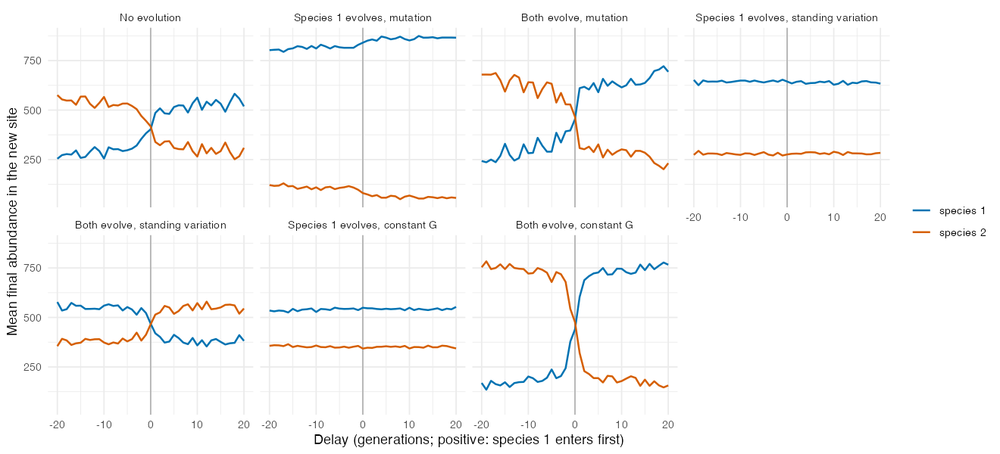
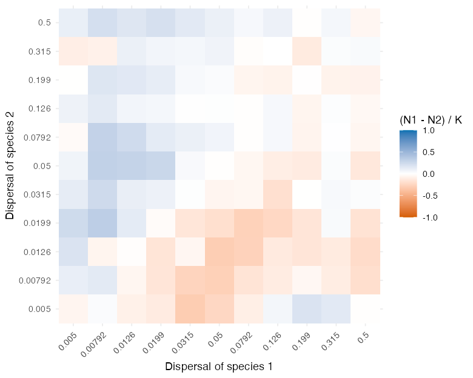
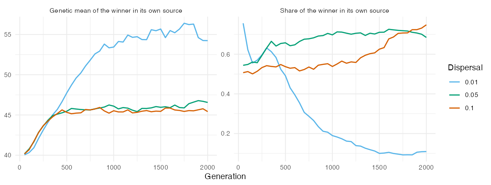
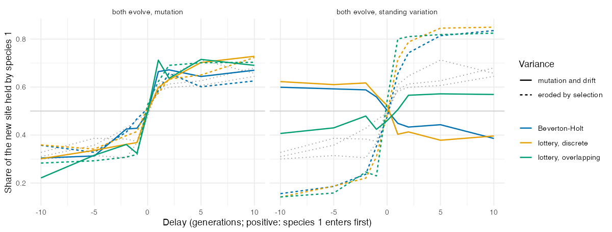
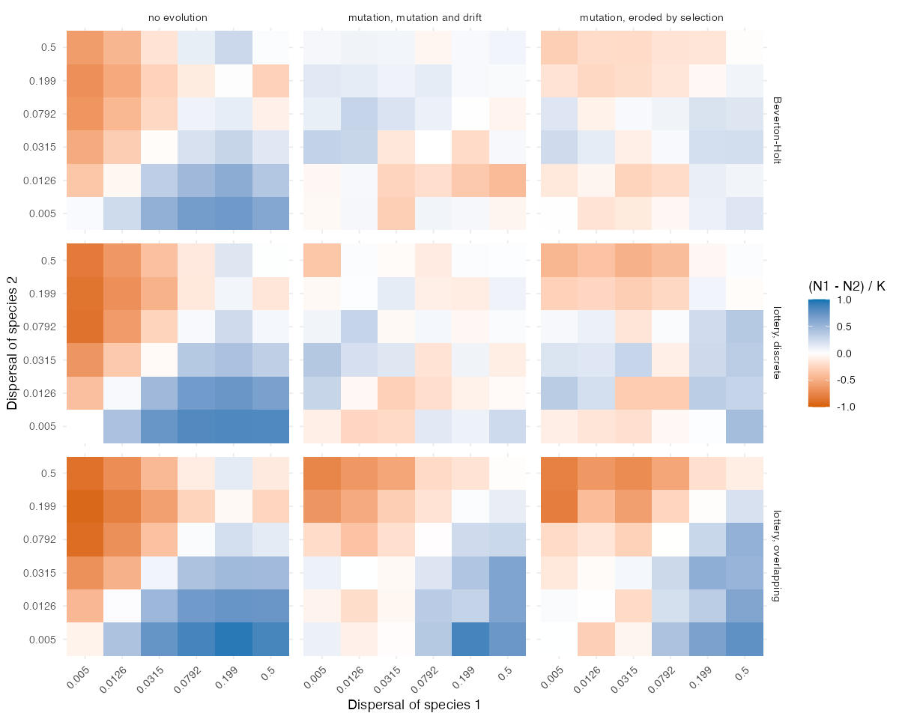

Replicating Urban & De Meester (2009)
Source:vignettes/articles/replication-urban.Rmd
replication-urban.RmdUrban & De Meester (2009) proposed that local adaptation can strengthen priority effects. In their individual-based model, two initially equivalent species start in two source patches and colonise a third, vacant patch whose environment differs from that of the sources. The first species to arrive adapts to the new patch and then keeps the later species out, a process they called community monopolization. When dispersal is high, gene flow from the sources prevents adaptation, and the outcome turns on dispersal instead. We asked whether the quantitative-genetic engine of comdynamite reproduces these results, and where it departs from them. Like the replication of Leibold et al. (2019), this article is part of the nesting map of the package.
Translation of the model
The script data-raw/replication_urban2009.R follows the
parameters of Table S1 of their electronic supplementary material, with
the environment and the traits multiplied by 100:
- three sites with environment 40, 40 and 60, connected to each other, with emigrants split equally between the other two sites; species 1 fills site 1 and species 2 fills site 2 at the start, both with optimum 40;
- a Gaussian niche with \sigma = 35.4, since their survival is \exp(-((z - e)/\omega)^2) with \omega = 0.5, and a non-genetic variance of 12.5 for the phenotypic and microsite deviations (standard deviation 2.5 each);
- Beverton-Holt growth with r_{max} = 5 and equal competition within and between species, so that a site holds about 1000 individuals, as their 1000 microsites;
- one step per generation, taken as 10 of their time steps (the lifespan 1/b without selection, with baseline mortality b = 0.1), so 500 generations instead of 5000 steps, delays between the two species of -20 to 20 generations instead of -200 to 200 steps, and dispersal 0.05 per generation;
- the new site is opened to each species at its introduction time
through the argument
pool_fromofsimulate_metacommunity(), added for this replication, and is then colonised by dispersal from the sources; the first species can enter after 20 generations; until then the site is not a destination of that species, so its emigrants go only to the other source rather than dying in a closed site; - a genetic variance per population with mutation and drift
(
mutation_varinevolution_control(), Lynch & Hill 1986): mutation adds V_m = L \mu a^2 = 0.05 per generation for L = 20 loci, \mu = 10^{-4} and an allelic effect a = 5, and drift removes 1/N of the variance per generation, as in a haploid population of N, so that the equilibrium in a full site is 50; - evolution by mutation starts without variance, and evolution from standing variation starts with L p (1 - p) a^2 = 120 for an allele frequency p = 0.4; a species that does not evolve has no genetic variance;
- 100 replicates of each setting, as in their figures.
Their model has 20 haploid loci with alleles of 0 or 1, lottery
recruitment into microsites vacated by mortality, overlapping
generations with selection on survival, and microsite variation within
patches. None of these is translated. One departure matters for what
follows: selection does not erode the genetic variance of
mutation_var, so standing variation persists and lowers
mean fitness (a variance load), whereas selection on 20 loci in their
model erodes it. We therefore added two scenarios with a constant
variance G = 120, as in the rest of the
package.
A first version of this replication let the emigrants that headed for
the new site before it opened die there. That loss of up to half of the
emigrants for 20 generations penalised the better disperser and, since
competition between the two species is neutral in the sources, its
effect persisted; it produced a dispersal result that we first
attributed to the Beverton-Holt engine. pool_from now keeps
those emigrants home, and all results below come from this corrected
version.
Colonisation delay
Without evolution, the first species to enter the new site usually dominated it, but not always (Fig. 1), as in their Fig. 2a. The first species to arrive ended with more individuals in 65% of the runs with a lead of one generation and in 84% with a lead of 10 generations. When species 1 alone evolved by mutation, it dominated the new site at every delay, with 88% of the final abundance when it arrived 10 generations after species 2 and 93% when it arrived 10 generations before. This matches their result that the evolving species wins even when it arrives last.
When both species evolved by mutation, the outcome became more extreme: one species held more than 90% of the new site in 34% of the runs, against 10% without evolution, which gives the U-shaped distribution of final abundances of their model. However, the first arrival was not more likely to win than without evolution: it won 66% of the runs with a lead of one generation and 72% with a lead of 10 generations (65% and 84% without evolution), and held 67% of the site with a lead of 10 generations (68% without evolution). In their model, a lead of 5 to 10 of their time steps (half a generation to one generation here) was enough for the first arrival to dominate. Evolution by mutation therefore amplified the dominance of whichever species took the lead, but did not tie that lead to the order of arrival as strongly as in their model.

Standing variation did not reproduce their results. When species 1
alone evolved from standing variation, it held about 70% of the new site
at every delay, whereas in their model it dominated less when it arrived
after its competitor. When both evolved from standing variation, the
priority effect was reversed: the second species to arrive held 60% of
the site with a lag of 10 generations, while in their model
monopolization was stronger than with mutation alone. This seems to come
from the variance load of mutation_var, since the reversal
disappears when the variance is held constant, but we have not separated
how the load acts on the first and on the second species to arrive. With
a constant G = 120 for both species,
the first arrival held 81% of the site with a lead of 10 generations and
won 90% of the runs, and one species held more than 90% of the site in
42% of the runs. This is closer to their result for standing variation.
With a constant G for species 1 alone,
species 1 held about 62% of the site at every delay.
Dispersal
With both species evolving by mutation and entering together, dispersal had a weaker effect than in their Fig. 4 (Fig. 2). Off the diagonal, the poorer disperser tended to win: the relative dominance (N_1 - N_2)/1000 reached 0.2 to 0.33 when species 1 dispersed at 0.008 to 0.02 and species 2 at 0.02 to 0.08, and the symmetric values were negative. When both species dispersed at 0.08 or more, the dominance stayed between -0.12 and 0.12. Their Fig. 4 has two regions: a monopolization region, where the better disperser arrives first and wins, and a region of gene-flow-induced maladaptation, where high dispersal prevents adaptation and the poorer disperser wins. We found only the second, and with a weaker effect.

Evolution is what turns the advantage around. With dispersal 0.0315
for species 1 and 0.005 for species 2 (40 runs), species 1 held 694
individuals of the new site and species 2 held 115 without evolution, so
the better disperser won, as in their monopolization region. With both
species evolving by mutation, species 1 held 236 and species 2 held 731.
The better disperser seems to colonise first and then to be held back by
the gene flow it keeps receiving from its source, while the few founders
of the poorer disperser adapt with little gene flow. In their model, the
first colonist also adapts before the gene flow catches up, which our
engine does not reproduce, perhaps because the genetic variance of a new
population starts low with mutation_var and builds up only
with population size.
Gene flow back into the sources
Their Fig. 3 shows that at high dispersal (m = 0.10) species 2 replaced species 1 in the source of species 1. We ran 40 replicates of 2000 generations with both species evolving by mutation and dispersal 0.01, 0.05 or 0.10, and asked whether the species that won the new site kept its own source (Fig. 3). With dispersal 0.01, the winner of the new site held 11% of its own source after 2000 generations, and the mean genetic optimum of its source population had moved from 40 to about 56, close to the environment of the new site. Gene flow from the large, adapted population of the new site seems to have maladapted the shrinking source population, which was then taken over by the other species. With dispersal 0.05 and 0.10, the winner kept 68% and 75% of its source, and the loser of the new site kept only 31% and 24% of its own. The replacement of a source by gene flow therefore happened here, but at low rather than high dispersal, and we have not identified why the winner’s source shrinks at the start when dispersal is low.

Three missing mechanisms
Three features of their individual-based model are absent from the
engine: recruitment into the microsites vacated by mortality,
generations that overlap (their baseline mortality is 0.1 per time
step), and a genetic variance that is built by mutation and eroded by
selection under clonal inheritance. We added them as options and crossed
them in a reduced version of the three experiments
(data-raw/mechanisms_urban2009.R).
recruitment = "lottery" replaces Beverton-Holt growth:
adults survive with probability 1 - mortality, offspring
are produced in proportion to fitness, and the vacant microsites (1000
per site) are filled by a multivariate hypergeometric draw from the
offspring present after dispersal. With mortality = 0.1 one
generation is 10 steps, and delays and run lengths were converted
accordingly. variance_selection = TRUE removes, every
generation, the Bulmer (1971) reduction of the variance by stabilising
selection, G^2/(\sigma^2 + G + V_E),
and keeps it, as under clonal inheritance. Each of the three recruitment
settings (Beverton-Holt, lottery with discrete generations, lottery with
overlapping generations) was run with and without this erosion: 100 runs
per delay for the colonisation delay, 50 runs over a 6 \times 6 sub-grid of dispersal rates, and
20 runs of 2000 generations for the gene flow into the sources.

The erosion of the variance by selection was the only mechanism that changed the colonisation experiment. With standing variation in both species and the variance left to mutation and drift, the first arrival won 24–38% of the runs with Beverton-Holt growth or a discrete lottery (the reversal described above) and 60–68% with overlapping generations. With the variance eroded by selection, it won 72–96% under every recruitment setting, against 64–84% without evolution, so the priority effect of standing variation in their Fig. 2 is reproduced. This seems to happen because selection removes the variance of the late arrival while it is still maladapted, so it no longer carries the variance load that let it catch up. With mutation in both species, the first arrival won 58–77% of the runs in every setting, close to the runs without evolution, although overlapping generations raised the share of monopolised runs (more than 90% of the site held by one species) from 28–30% to 46–49%. A species that evolved by mutation against one that did not won about 90% of the new site in every setting.

Overlapping generations changed the dispersal experiment. Without evolution the better disperser dominated the new site in every recruitment setting, more so under the lottery (mean relative dominance off the diagonal 0.33 with Beverton-Holt growth, 0.48 and 0.54 under the lottery). With mutation and discrete generations this advantage disappeared (-0.11 and -0.05), and erosion by selection restored little of it (0.07 and 0.11). With overlapping generations the better disperser kept most of it (0.32, and 0.35 with erosion), so the grid gained the region favouring the better disperser that was missing above. Adults that survive several steps seem to buffer the population against the maladapted immigrants of each step, so the demographic gain of dispersal outweighs its genetic cost. The gene flow into the sources was not changed: at a dispersal of 0.01 the winner of the new site kept only 3–22% of its own source after 2000 generations in every setting, and at 0.10 it kept 71–95%.
Taken together, two of the departures seem to be explained by missing mechanisms: the reversed priority effect of standing variation by the absence of erosion of the variance by selection, and the missing advantage of the better disperser by the absence of overlapping generations. Lottery recruitment with discrete generations changed none of the results. The weak priority effect with mutation and the loss of the source at low rather than high dispersal remain unexplained.
Summary
The quantitative-genetic engine reproduces two results of Urban &
De Meester (2009): a species that evolves by mutation wins a new site
against one that does not, whatever the order of arrival, and evolution
in both species makes the new site more often dominated by a single
species. It departs from their model in three ways. With mutation, the
first arrival is not more likely to win than without evolution; with
standing variation, the priority effect is reproduced only with a
constant G, since the size-dependent
variance of mutation_var carries a variance load that
reverses it; and over the dispersal grid, evolution makes the poorer
disperser win, as in their region of gene-flow-induced maladaptation,
but no region favours the better disperser. Gene flow from the new site
replaced a source population, as in their Fig. 3, but at low dispersal.
Of three mechanisms missing from the engine, erosion of the variance by
selection restored the priority effect of standing variation, and
overlapping generations restored the advantage of the better disperser;
lottery recruitment changed nothing. One step was taken as 10 of their
time steps, and the speed of adaptation was set by V_m and the variance rather than matched to
their loci.
References
Bulmer, M. G. (1971). The effect of selection on genetic variability. The American Naturalist, 105, 201–211. https://doi.org/10.1086/282718
Lynch, M., & Hill, W. G. (1986). Phenotypic evolution by neutral mutation. Evolution, 40, 915–935. https://doi.org/10.1111/j.1558-5646.1986.tb00561.x
Urban, M. C., & De Meester, L. (2009). Community monopolization: local adaptation enhances priority effects in an evolving metacommunity. Proceedings of the Royal Society B, 276, 4129–4138. https://doi.org/10.1098/rspb.2009.1382